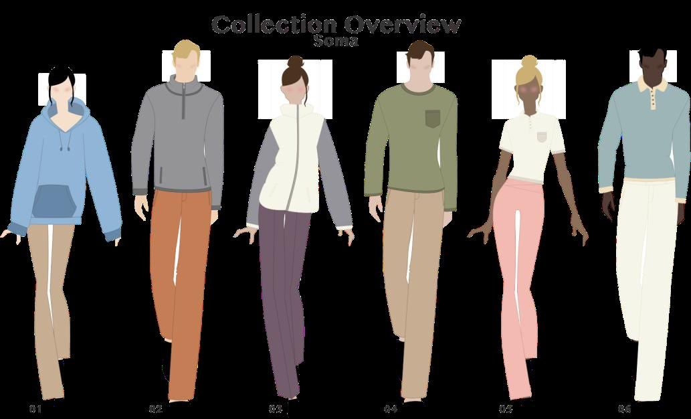

Nuvea
The Soma Sensory Comfort Collection
A product-development concept imagining clothing as a discreet source of sensory reassurance. Soft materials, refined silhouettes and considered details inform the collection. Sensory benefits are design intentions, not outcomes verified through wearer testing.